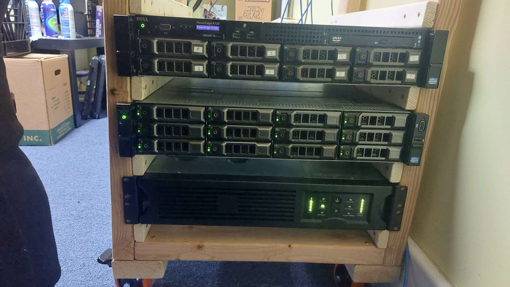
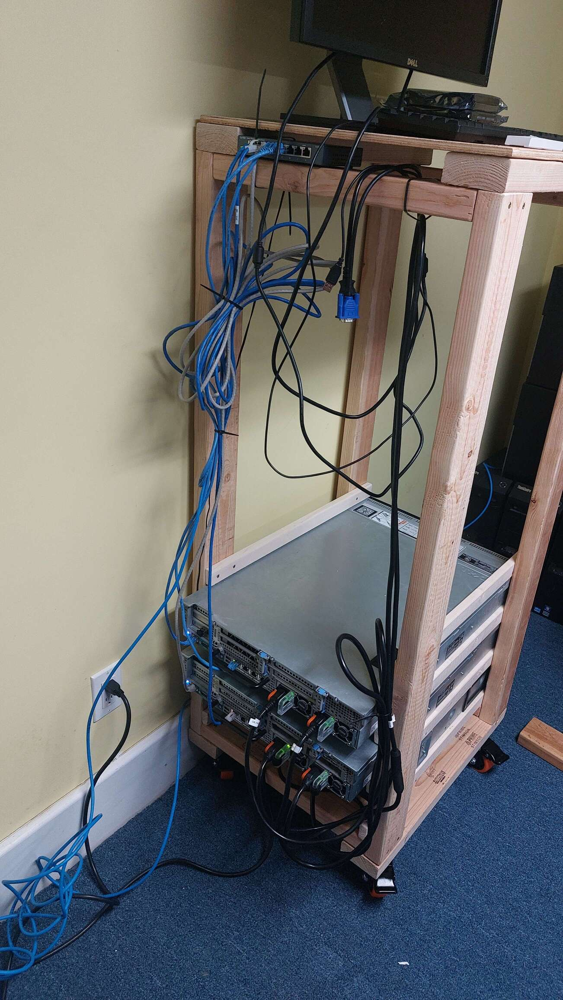

This page describes my janky homelab setup. Someone has to pay the power bill for this thing... (around $100/month)
Some of my servers are on a wooden rack that I designed and built myself. The rack has a cheap 8 port gigabit switch which is connected to a router. I also have a APC Smart UPS SUA1500RM2U on the bottom of the rack to power the most important equipment.
My primary interest with homelabbing is high performance computing (HPC). I also like learning how to configure and run my own services.
I give all my servers character names to identify them.
Rimuru (main server, July 2022 to present)
Named after the main character in the anime Tensei Shitara Slime Datta Ken (Tensura). I use this one as a central location for data and self-hosted services I run at home instead of on cloud computing. My intention is to replace this server with something newer and using less power. I would like to have a high clock speed CPU and a smaller number of high capacity hard drives.
- Dell PowerEdge R720xd
- 1x Intel Xeon E5-2643 v2 (6C/12T 3.5GHz)
- 64GB (2x 32GB) PC3-10600R memory
- 12x 8TB SAS HDD in ZFS RAIDZ2
- Dell PERC H310 (flashed to IT mode)
- 1TB PCIe NVMe SSD for OS
- 2x 750W Power Supplies
- Ubuntu Server 22.04
Lacia (compute server, July 2020 - present)
Named after the character Lacia in the anime Beatless. This used to be the central server for my data and services. Now it is used for some heavy computing. I plan to remove this server from my homelab after I finish some current projects.
- Dell PowerEdge R720
- 2x Intel Xeon E5-2697 v2 (24C/48T 2.7GHz)
- NVidia Tesla P100 16GB GPU
- 512GB (16x 32GB) PC3L-10600R memory
- 8x 4TB SATA HDD
- Dell PERC H710 (flashed to IT mode)
- 1TB PCIe NVMe SSD for OS
- 2x 750W Power Supplies
- Ubuntu Server 22.04
Kurumi (compute server, July 2023 to present)
Primarily named after Kurumi, the hacker character in the anime Lycoris Recoil. Also happens to be the same name as Kurumi from the anime Date A Live. This is a server I use for heavy computing with low memory requirements.
- Dell PowerEdge R630
- 2x Intel Xeon E5-2698 v4 (40C/80T 2.2GHz)
- 32GB (4x 8GB) PC4-2400T-R memory
- 500GB SATA SSD
- Dell PERC H330
- 2x 750W Power Supplies
- Ubuntu Server 22.04
Komari (compute server, Jan 2024 to present)
Named after Terakomari Gandesblood from the anime Hikikomari Kyuuketsuki no Monmon (The Vexations of a Shut-In Vampire Princess). This is a server I use for heavy computing with high memory requirements.
- Dell PowerEdge R630
- 2x Intel Xeon E5-2698 v4 (40C/80T 2.2GHz)
- 384GB (8x 32GB + 8x 16GB) PC4-2400T-R memory
- 8x 1.2TB 10K SAS HDD
- Dell PERC H730
- 1TB PCIe NVMe SSD for OS
- 2x 750W Power Supplies
- Ubuntu Server 22.04
- Used from Jan 2024 - Present
Shirase (decommissioned, 2020 to 2022)
Named after the main character from the anime Battle Programmer Shirase (BPS). This is one of the servers I used to begin my homelabbing with enterprise hardware. I found this one in recycling while I was working on my Bachelor's degree at RPI.
- IBM System x3530 M4
- 250GB SATA SSD
- 12GB (2x2GB + 2x4GB) PC3-10600E memory
- Intel Core i3-4170 (2C/4T 3.7GHz)
- 2x460W Power Supplies
Pictures
 Page last updated: 2024-05-25
Back to the home page